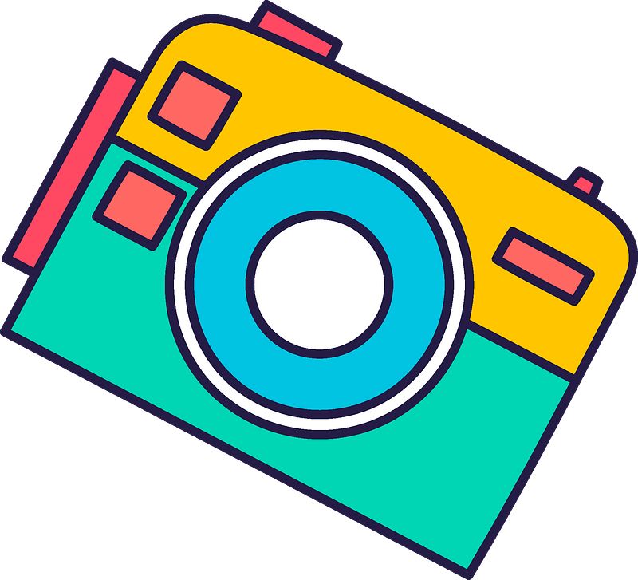
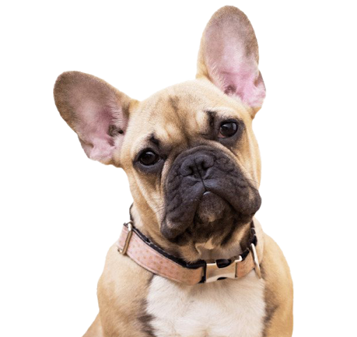
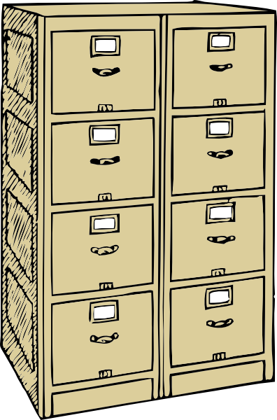
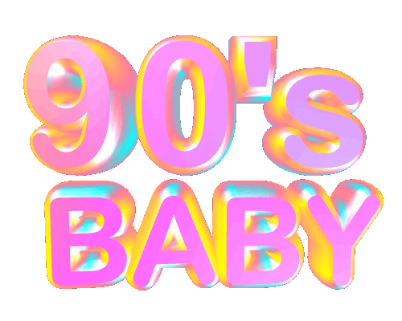
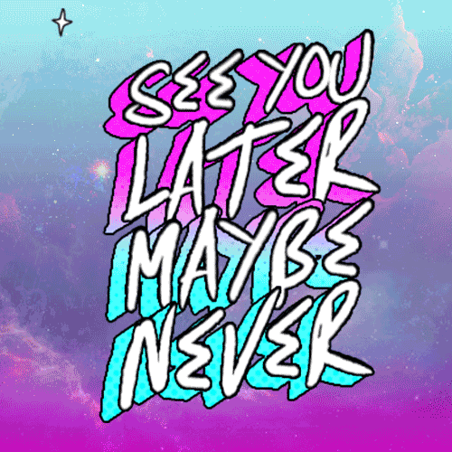
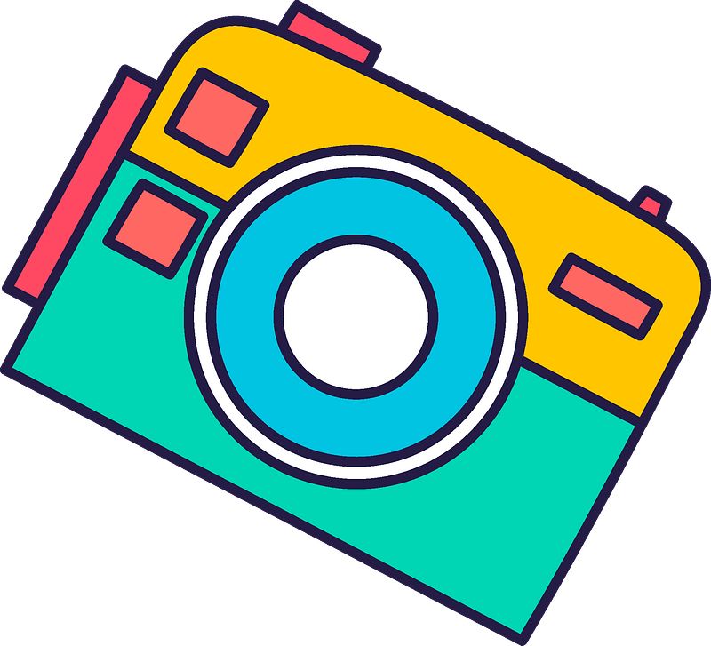
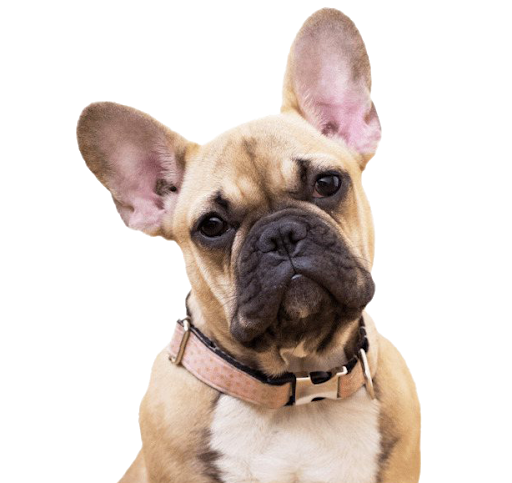
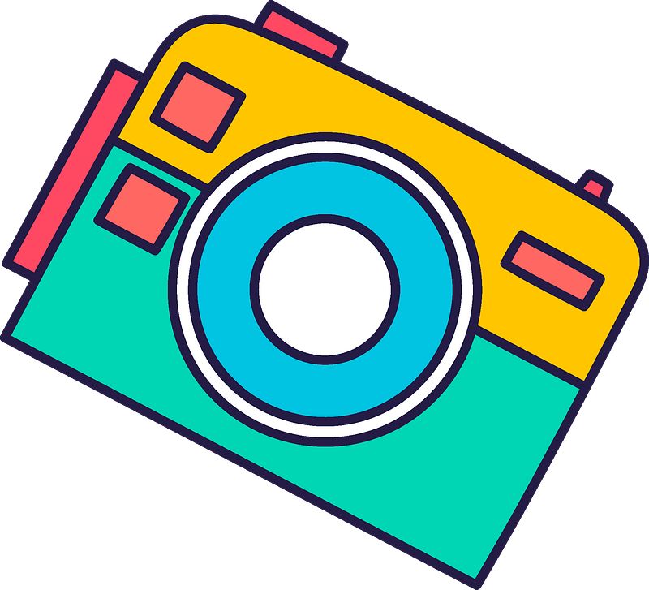
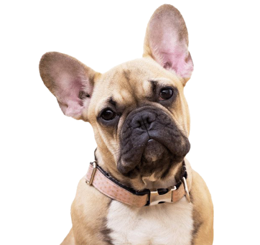

Jag är 32 år gammal. Född i Bosnien men uppvuxen i Sverige. Bott i Norge i snart 11 år.
Studerade media på gymnasiet. Efter skolan så har jag bara jobbat och rest världen runt.
Bor på Tøyen med min flickvän och vår frenchie Kasper.
Saker jag är glad i: resa, hundar, plantor, mode, film, foto.
 
Saker som jag ser fram emot i detta studie.
Glädjebudskap
Kamratskap
Branschkunskap
Entreprenörskap
Konstnärskap

Jag är i en period av mitt liv där jag känner att jag vill testa nåt helt nytt.
Interaksjonsdesign är nåt som jag vill jobba vidare med i framtiden då det känns väldigt viktigt och ledande i vår vardag.
Det var väldigt länge sen jag studerade så jag är väldigt nyfiken och exalterad till att sätta mig bakom skolbänken
för att suga åt mig massa kunskap och främst för att va lite kreativ också.
 
Jag har jobbat en del år i restaurangbranschen så man kan lätt säga
att jag är en foodie. Väldigt glad i mat, speciellt modern japansk mat. Sista åren har jag jobbat nere på Tjuvholmen
på ett en restaurang som heter Hanami. Detta är en liten PR video jag och en vän gjorde till restaurangen.
  
 